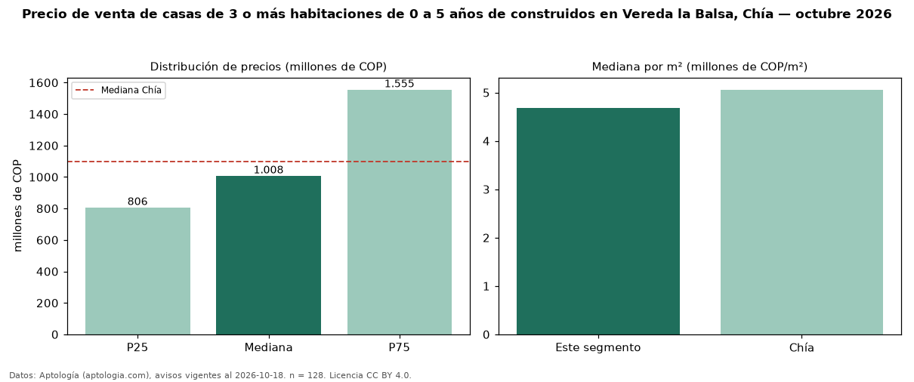

Precio de venta de casas de 3 o más habitaciones de 0 a 5 años de construidos en Vereda la Balsa, Chía — octubre 2026
Con 128 avisos vigentes, el precio mediano de casas de 3 o más habitaciones de 0 a 5 años de construidos en venta en Vereda la Balsa, Chía es COP 1,01 mil millones. Frente a la mediana de las casas de 3 o más habitaciones en venta de Vereda la Balsa (COP 1,10 mil millones, n = 208), queda 8 % por debajo; este segmento reúne el 62 % de esos avisos. Por metro cuadrado, la mediana es COP 4,68 millones/m² (n = 128), 1 % por encima de las casas de 3 o más habitaciones en venta de Vereda la Balsa (COP 4,63 millones/m²). El área mediana anunciada es 238 m². La administración mediana declarada es COP 750.000 al mes (n = 99). La mitad central de los avisos va de COP 806 millones a COP 1,55 mil millones (razón 1,9), una dispersión moderada. El estrato más frecuente es 4 (49 % de los avisos con estrato). La mediana de todas las casas en venta de Chía es COP 1,10 mil millones (−8 % de diferencia). Datos: Aptología (aptologia.com), CC BY 4.0 — https://www.aptologia.com/casas-en-venta/chia/vereda-la-balsa. Archivos: PDF, CSV con las cifras y gráfica PNG.

| Avisos únicos | 128 |
|---|---|
| Percentil 25 | COP 806.250.000 |
| Mediana | COP 1.007.500.000 |
| Percentil 75 | COP 1.555.000.000 |
| Mediana por m² | COP 4.684.375 |
Fuente: avisos vigentes de portales inmobiliarios recopilados por Aptología, deduplicados (mínimo 30 avisos únicos por celda). Precios pedidos, no cerrados. Fecha: 2026-10-18.